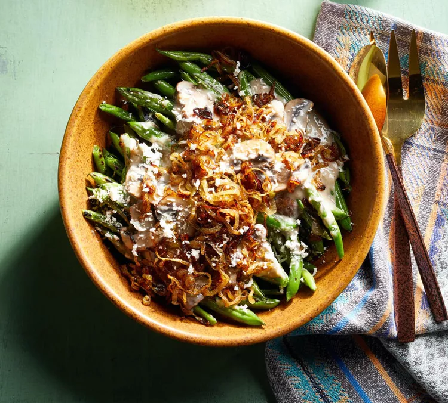

Green Beans with Creamy Mushroom Sauce

Fresh green beans are served with a creamy mushroom sauce and crumbled goat cheese in this easy side dish recipe.
- 3 tablespoons olive oil, divided
- 1 cup thinly sliced shallot
- 1 pound fresh green beans, trimmed
- 2 tablespoons water
- ½ teaspoon kosher salt, divided
- ¼ teaspoon ground black pepper, divided
- 2 cups sliced cremini mushrooms
- 1 tablespoon fresh thyme leaves
- 3 cloves garlic, minced
- 1 tablespoon all-purpose flour
- 1 cup low-fat milk
- ½ cup crumbled goat cheese
- Heat 2 tablespoons olive oil in a 12-inch nonstick skillet over medium-high heat. Add shallots; cook until deep golden, stirring occasionally, 4 to 5 minutes. Drain shallots on paper towels, reserving drippings in skillet.
- Add green beans, water, 1/4 teaspoon salt, and 1/8 teaspoon pepper to reserved drippings. Cook over medium-high heat, covered, for 2 minutes. Cook, uncovered, until beans are crisp-tender and starting to blister, stirring occasionally, about 6 minutes more. Transfer to a platter; keep warm.
- For mushroom sauce, add the remaining 1 tablespoon oil to the skillet. Add mushrooms; cook and stir over medium heat for 1 minute. Add thyme, garlic, and remaining 1/4 teaspoon salt and 1/8 teaspoon pepper. Cook until mushrooms are golden, stirring frequently, about 2 minutes more. Mix in flour; gradually stir in milk. Cook and stir until thick and bubbly. Continue cooking and stirring for 2 minutes more.
- Pour mushroom sauce over beans and top with sauteed shallots and crumbled goat cheese. s